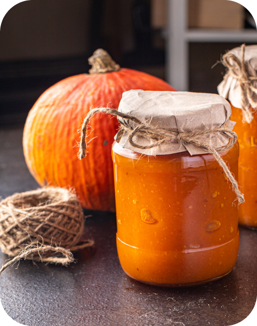

Back
Spiced Pumpkin Preserve
Made from organic pumpkins grown on our farms, this preserve captures the essence of autumn with a blend of warm spices. Each jar is a celebration of seasonal flavors, perfect for spreading on toast or incorporating into festive recipes.
Product Details:
- Volume: 10 oz per jar.
- Packaging: Glass jars.
- Nutritional Information: Rich in vitamins A and C, fiber, and spices that support digestion.